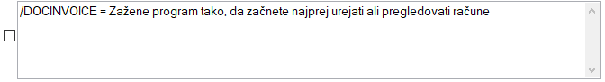

/DOCINVOICE

S parametrom /DOCINVOICE dosežemo, da se Tangenta zažene v načinu urejanja računov
V kolikor odkljukamo kvadratek na levi strani zgornje slike, se bo zagon Tangenta nadaljeval enako kot bi se v primeru, da smo program zagnali s parametrom
/DOCINVOICE v komandni vrstici
POZOR: /DOCPROFORMAINVOICE in /DOCINVOICE ne moremo in je nesmiselno dokljukati oziroma navesti hkrati v komandni vrstici, saj program ne bo vedel v katerem načinu naj se zažene!